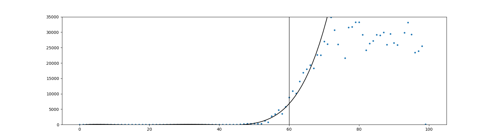

Early in the pandemic, I wanted to perform a regression on the number of cases in the U.S. to see what function would best fit the data. I am aware that the growth of infection cases is usually exponential, but due to the lack of testing and reporting, the number of cases seemed to have a polynomial growth—something like a 5th degree polynomial.
This is not supposed to be serious model for modeling the growth of case numbers. The standard model for that is the SIR model, but is more complicated. This is just a small project for me to learn how to perform regressions in Python and work with SQL databases. I might do a Python implementation of the SIR model at some other point.
Webscraping the Covid-19 Data
I wrote a short python script that creates a database with SQLite, downloads the data on infection cases in the U.S. from the CDC's website, and then
# ///////////////////////// Webscraping the Covid-19 Data /////////////////////////////////
import requests
import urllib.request
import time
from bs4 import BeautifulSoup
import json
# Set the URL you want to webscrape from
url = 'https://www.cdc.gov/coronavirus/2019-ncov/json/new-cases-chart-data.json'
print("url =", url,'\n')
# Connect to the URL
response = requests.get(url)
# Parse HTML and save to BeautifulSoup object
soup = BeautifulSoup(response.text, "html.parser")
# Decode the JSON file into a list of lists
data=json.loads(str(soup))
I originally tried to download the data by searching the Beautiful Soup object, but then realized that the data is being loaded in an iframe so there were no HTML table tags in the Beautiful Soup object. The fast solution I saw was just to take it straight from the JSON file.
Creating the Database
For performing the regression, creating the database with SQLite is more work than required. I could have skipped this entire step as the infection cases are already in data, but I wanted to learn a bit of SQL so I took the extra unnecessary step.
I choose March 16 as the starting date because that was the first date that started a 3-day growth. Before that cases where very small and were fluctuating a lot. This seems to be where things really took off. I chose 10 days of data because I like the number 10.
# /////////////////////// Creating the Covid-19 database with SQLite ///////////////////////
import sqlite3 as sql
# Create a database and open a connection to it
connection = sql.connect('CovidCaseData.db')
terminal = connection.cursor()
# Create a table within database for infection cases
terminal.execute("""CREATE TABLE infectionCases (
date text,
cases integer
)""")
# Insert all of the cases into the table from March 16, 2020 to March 25, 2020
for i in range(54,65):
terminal.execute("INSERT INTO infectionCases VALUES (:date,:cases)", {'date':data[0][i], 'cases':data[1][i]} )
Performing the Polynomial Regression in Python
I performed the regression on the first 60 days of infection case data in the U.S. to find the 5th degree polynomial that minimzes the squared error.
This is the polynomial plotted alongside the first 100 days of infection case data in the U.S.

# ////////////////// Performing the regression ////////////////////////////////////////////
import numpy as np
import scipy as sp
import matplotlib.pyplot as plt
# Create numpy arrays
x = np.array( list( range(60) ) )
y = np.array( list( range(60) ) )
# Fill in the range array with infection case numbers for the first 60 days from database
terminal.execute("SELECT cases FROM infectionCases")
casesCol = terminal.fetchall()
for i in range(60):
y[i]=casesCol[i][0]
# Create an array with the case numbers for the first 100 days
X = np.array( list( range(100) ) )
Y = np.array( list( range(100) ) )
for i in range(99):
Y[i]=casesCol[i][0]
# Perform a least-squares 5th degree polynomial fit on the case numbers for the first 60 days
poly = np.polyfit(x,y,5)
# Plot the first 100 days of the pandemic and the polynomial regression line
xp = np.linspace(0,100,100)
plt.plot(X,Y,'.')
plt.axvline(x=60,linewidth=1, color='k')
plt.plot(xp,np.polyval(poly,xp),'k-')
plt.ylim(0,35000)
plt.show()
Conclusion
The number of reported cases in the U.S. seemed to have a polynomial growth.